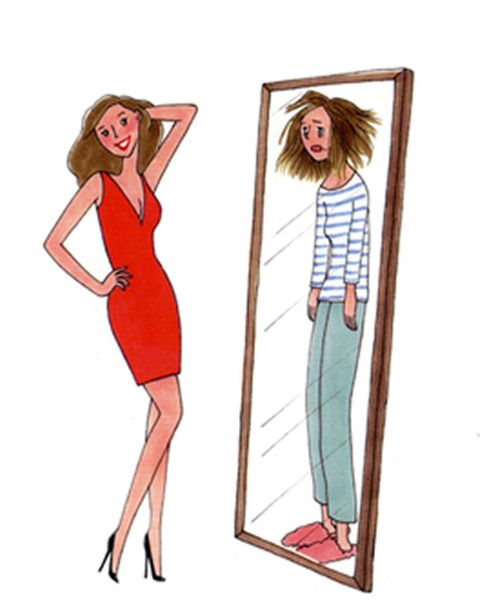

IDENTIFICACIÓN
Proceso psicológico inconciente mediante el cual el sujeto asimila un aspecto, una propiedad, o un atributo de otro sujeto y se transforma total o parcialmente sobre el modelo de este sujeto.
Identificacion Primaria
- ⇛Constituyen el núcleo del yo, ej: un niño que se identifica con un superhéroe
⇛
Identificacion Secundaria
- ⇛En la etapa de la adolescencia, ej: un adolescente o adulto que quiere ser como una figura importante, famoso, reconocido, etc...
⇛
PROYECCIÓN
Dinamismo psiquico inconciente por el cual se tiende a atribuir a un objeto, persona, grupo o situacion, afectos y/o deseos internos de uno mismo.

Mecanismos de defensa inconciente:
Proyecion de sentimientos y expectativas positivos +:
- Atribuir a los demás cualidades que se desean poseer, pero que se siente que faltan.
- Idealizar a otra persona que se percibe como segura y exitosa.
Proyecion de sentimientos y expectativas negativos -:
- Atribuir a los demás sentimientos, impulsos o pensamientos que generan angustia o ansiedad.
- Ver en los demás lo que no se quiere ver en uno mismo.
- Expulsar aquello que hace daño.
Algunos ejemplos de proyección son:
- Decir que a una persona le caemos mal, cuando realmente es a uno mismo a quien le cae mal.
- Atribuir a la otra persona una necesidad.
- Decir "hoy la tarde está triste".
- Un padre decir al hijo "eres un egoísta".
Algunas señales de proyección son:
- Sentirse altamente reactivo y rápido para culpar.
- Dificultad para ser objetivo.
- Dificultad para ponerse en los zapatos de la otra persona.
TRANSFERENCIA AFECTIVA
La transferencia afectiva es un proceso inconsciente por el que una persona transfiere emociones y deseos a otra persona. Es un concepto fundamental del psicoanálisis y se puede dar en la vida cotidiana.
En los primeros años de vida, forman una especie de plantilla de como va a ser la persona.|
Caracteristicas
- Se trata de un fenómeno psíquico que puede darse con cualquier persona, como un médico, un familiar, un compañero de trabajo, un vecino o un profesor.
- El paciente/estudiante revive situaciones infantiles inconscientes al interactuar con otras personas.
- Puede ser percibida como un elemento negativo, pero puede ayudar a conseguir la conexión entre el paciente/estudiante y el médico/profesor.
Transferencia positiva +:
- Los afectos proyectados hacia el profesional son amistosos o relacionados con el amor.
Transferencia negativa -:
- Hay sentimientos de odio y aversión hacia el profesional.
Repeticion Futura
La repetición futura es un fenómeno complejo que puede influir en las relaciones y el bienestar emocional de una persona.
¿Por qué se repite la transferencia?
- ⇛La repetición de la transferencia se debe a que las experiencias emocionales tempranas, especialmente las que ocurren durante la infancia, dejan una huella profunda en la psique de una persona. Estos patrones emocionales y de relación se almacenan en el inconsciente y pueden resurgir en situaciones similares en el futuro.
¿Cómo se manifiesta la repetición futura?
La repetición futura en la transferencia afectiva puede manifestarse de diversas formas, como:
Repetición de patrones de relación:
- ⇛El estudiante puede repetir en la relación con el analista patrones de relación disfuncionales o dolorosos que experimentó en su infancia con figuras significativas.
Repetición de emociones y afectos:
- ⇛ El estudiante puede experimentar en la relación analítica emociones y afectos intensos que le recuerdan a experiencias emocionales del pasado.
Repetición de síntomas:
- ⇛El estudiante puede presentar en la relación analítica síntomas que son una repetición de conflictos o traumas no resueltos.
¿Como se Puede abordar este tipo de situaciones?
Escuchar y observar:
Atentamente las manifestaciones de la repetición en la transferencia.
Interpretar:
Los significados de la repetición en relación a la historia personal del estudiante.
Facilitar:
La elaboración de los conflictos y traumas que se actualizan en la repetición.